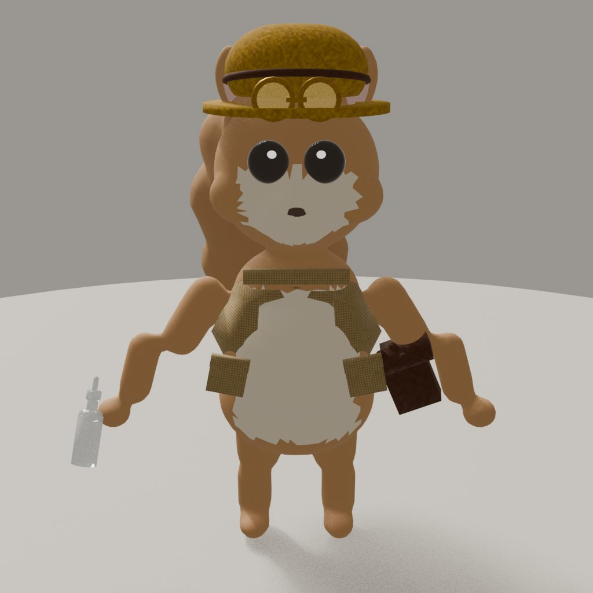
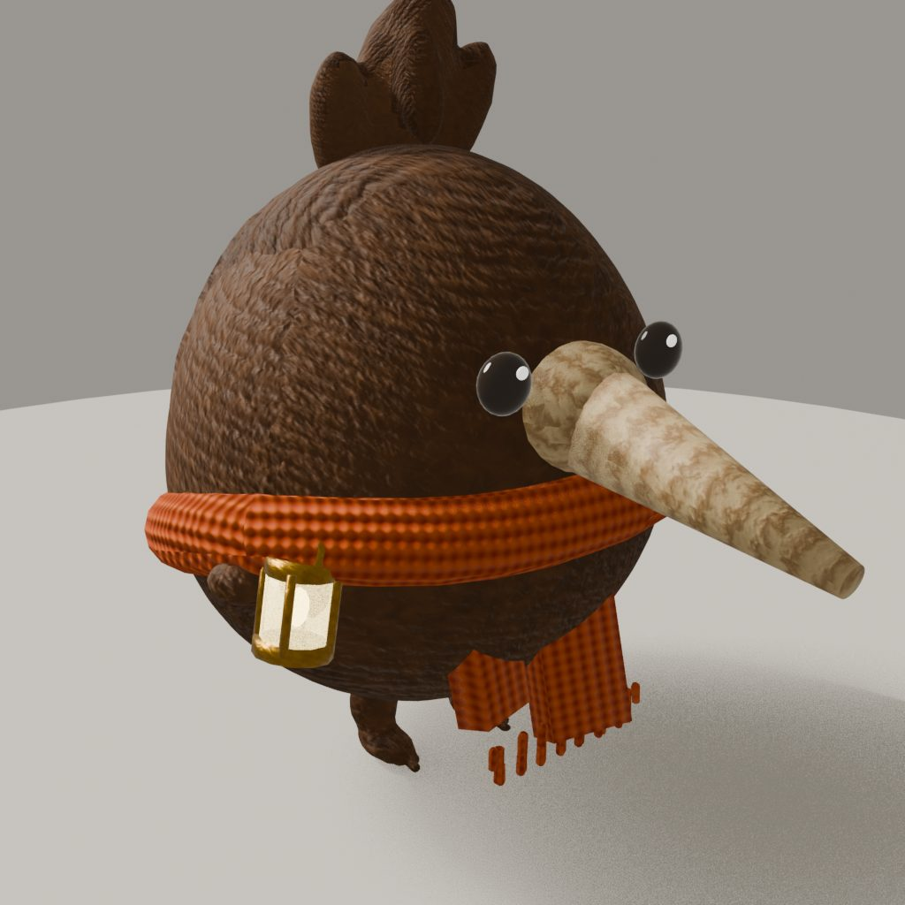
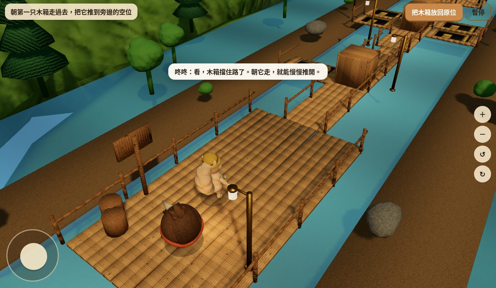
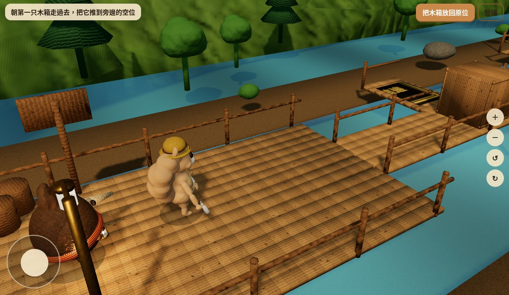
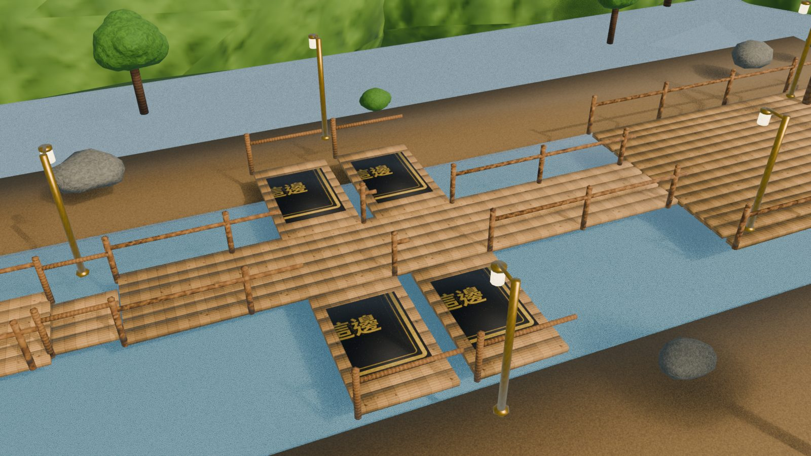

溪邊棧道單關樣板樣張
這是給審看用的靜態樣張，不是可玩遊戲，也不會取代現有的風信谷 v2。角色工作室轉台與實際遊戲畫面都在下面。

栗栗工作室正面：可見芥黃帽、護目鏡、背心與噴壺。

咚咚工作室四分之三：可見棕色幾維鳥身形、橙色圍巾與提燈。

遊戲開始畫面：棧道被第一隻木箱擋住，可見出口方向與操作提示。

遊戲內鏡頭：這是實際遊玩時較接近的角色樣子。

第二段側向置箱灣，地上有「放這邊」標記。